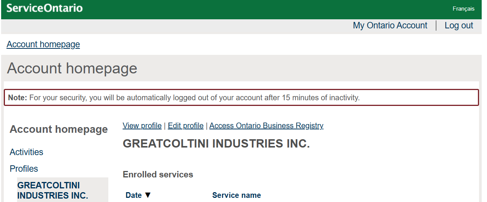

Posted on January 15, 2025 by Colton Donkersgoed
Steamworks Developer
As an update on the business side of things, I have taken some steps towards making my game come a little closer to reality. This has been done with two things:
-
I am officially a Steamworks developer:

- I am also officially an owner of my own business: GreatColtini Industries 
Steam Page
In addition, I have begun working on my Steam page for my game. It's mostly just placeholder for now, but here is a sneak peek at what it looks like:

I also requested commissioned art for the Steam page, as there are a lot of specific requirements, and I wanted someone with experience creating Steam page assets to handle it.
You can see on the right-hand side one of the capsules created. All of the logos and assets for the game were handmade:

I am very grateful for the work done and very pleased with the results! Below are some additional art pieces they created, along with the sketch I provided them:
UI Adjustments
Character Selection
I have been making adjustments to the character selection screen,
and this is the newest layout:

I had two goals in mind when making these changes:
- Have space for providing specific character class details
- Present many character options at once without it being too cluttered
In-game UI
Next up for the UI is the in-game portion. Here, I have added in a passive ability tracker. This tracker will show you what passive abilities you have unlocked and how many slots you have.

Gameplay Changes
Weapon Format
- Two regular upgrades, enhancing some basic stats of the weapons.
- Two unique upgrades, adding special effects or changing the way the weapon works.
- One legendary upgrade, requiring a specific number of upgrades to have been selected.
New Weapons
Dagger: a rapid fire weapon that automatically fires in the direction the player is facing.

- Dagger Pierce: each point in this upgrade allows the dagger to pierce one more target.
- Dagger Damage: each point in this upgrade increases the damage of the dagger.
- Poison Daggers: each point in this upgrade increases the poison damage dealt by the dagger, dealing damage over time to a target.
- Hidden Dagger: This upgrade provides a 25% chance that a dagger will additionally fire from behind.
- Fan of Knives: The dagger upgrades to fire 5 projectiles at once.
Ice Spikes: a weapon that fires a cone of ice shards, freezing any enemies touched.

- Ice Spikes Damage: Increases the damage done by the ice spikes by 0.5
- Ice Spikes Duration: Increases the duration for which enemies are frozen.
- Coldsnap: Upon thawing, enemies shoot out shards of ice dealing damage.
- Frostbite: Enemies are slowed after unfreezing, increased by 10% per level.
- Ice Storm: Creates a storm of ice around the player, freezing everything in your vicinity
Legendary Weapons
Following a similar pattern to Swarm and Vampire Survivors, I wanted to add in special upgrades to each of the weapons, rewarding players for levelling the weapons up repeatedly. Currently, some weapons (the Ice Spikes and the Dagger) - but in the future all weapons - have legendary upgrades which greatly improves their capabilities.